Overview
Worked in a team of 4 to design and deploy an autonomous underwater vehicle with a pressure sensor, thermistor, and pH sensor to develop a way to characterize different layers of the ocean to understand ocean acidification and how climate change is harming the natural process of marine organisms. We deployed our AUV at Dana Point, CA, collected data, and presented our findings to professors and other engineering students at Harvey Mudd College.
I was the mechanical lead: I designed the frame and waterproof electronics enclosure, ran the buoyancy and ballast calculations, and led integration of the motors, sensors and electronics into the vehicle. I also managed team organization and worked with my teammates on the circuits, C++ code, and data analysis.
Key outcomes:
- Led mechanical design and integration, and calculated buoyancy and ballast for neutral trim: 0.63 kg of ballast for freshwater testing, plus 91 g for denser seawater at Dana Point
- Built custom operational-amplifier circuits to scale analog sensor outputs to the input range of a Teensy 4.0. This allowed us to achieve higher resolutions to analyze the data collected.
- Debugged circuits and hardware during testing and deployment using oscilloscopes and multimeters
- Programmed feedback control loops in C++ for AUV depth and dive control
- Used MATLAB to process collected data and create 2D plots
Why pH and temperature?
The ocean absorbs about a quarter of the CO₂ that humans release into the air. When CO₂ dissolves in seawater, a small amount reacts with water to form carbonic acid, which breaks apart and releases hydrogen ions. More hydrogen ions means lower pH and more acidic water. This is ocean acidification, and it speeds up as greenhouse gas emissions rise.
CO₂(atm) → CO₂(aq) + H₂O ⇄ H₂CO₃ ⇄ H⁺ + HCO₃⁻ ⇄ 2H⁺ + CO₃²⁻
pH shows the acid
pH measures hydrogen ion concentration directly, so it is the most direct sign of acidification. As those extra hydrogen ions bind to carbonate, less of it is left for calcifying organisms like oysters, corals and plankton to build their calcium carbonate shells and skeletons. Acidic water can also keep larvae from surviving their early life stages.
Temperature explains why
How much CO₂ dissolves depends on temperature: by Henry's law, colder water holds more dissolved gas. Temperature also sets water density, which separates the ocean into layers that mix very little. Warming from climate change makes this layering stronger and adds heat stress for organisms that are already struggling with acidity.
Depth puts it together
Marine organisms live at specific depths, so a single surface reading can miss conditions that matter to them. Measuring pH and temperature together at each depth maps the ocean's layers and shows where acidic, CO₂-rich water sits. That shows which habitats are most at risk, and how a warming climate is changing them.
The vehicle
A PVC frame carries three motors and foam floats for neutral buoyancy, with a waterproof box underneath for the Teensy, sensor protoboard, battery and ballast. The frame is a compact 18 × 21 × 19.5 cm to keep drag and vertical-motor current low. The robot weighed 3.01 kg; we calculated 0.63 kg of ballast for freshwater testing and added 91 g more at Dana Point for denser seawater (1025 kg/m³).

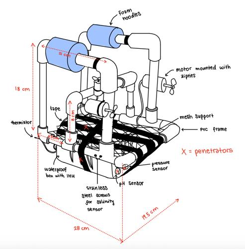

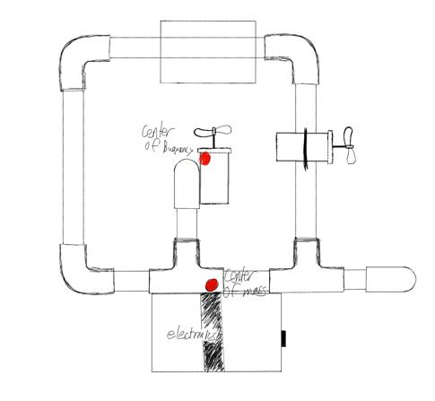
| Measures | Sensor | Why we chose it |
|---|---|---|
| Depth | NXP MPX5700 pressure sensor | Wide pressure range, linear analog output, depth from P = ρgh |
| Temperature | Murata 47 kΩ NTC thermistor | High accuracy and sensitivity, short response time |
| pH | HNNUY liquid pH 0–14 module | Linear analog output within budget, Teensy compatible |
Circuit design
Each sensor's output covers only a small part of the Teensy's 0–3.3 V ADC range at ocean conditions. We designed a two-stage op-amp circuit for each one: a unity-gain buffer to prevent loading the sensor, then a gain-and-offset stage that stretches the expected signal across most of the ADC range for better resolution.
Decoupling capacitors and filtering
Each op-amp has a 100 nF and a 10 µF capacitor from its 5 V supply to ground. These are decoupling capacitors: they hold the supply voltage steady when the motors and the Teensy draw sudden bursts of current. The 100 nF capacitor handles fast spikes and the 10 µF capacitor handles slower dips. Without them, supply noise would pass straight into the amplified sensor signal.
Decoupling cleans up the power, not the signal. Noise picked up by the sensors and wiring still reaches the Teensy, and at a 10 Hz sample rate, any noise above 5 Hz can alias, folding back into the data as a false low-frequency signal (Nyquist). The data shows this as small jitter on top of the depth and temperature readings.
Future step: add a passive RC low-pass filter between each op-amp output and its Teensy pin, a series resistor followed by a capacitor to ground, with cutoff fc = 1 / (2πRC). The sensor signals change over seconds as the AUV moves between waypoints, so a cutoff of a few hertz would keep the real signal and block the noise while staying under the 5 Hz Nyquist limit.
| Proposed filter | R | C | fc | 2fc < 10 Hz? |
|---|---|---|---|---|
| Pressure | 7.1 kΩ | 10 µF | 2.2 Hz | 4.4 Hz ✓ |
| Temperature | 4.7 kΩ | 10 µF | 3.4 Hz | 6.8 Hz ✓ |
| pH | 10 kΩ | 10 µF | 1.6 Hz | 3.2 Hz ✓ |

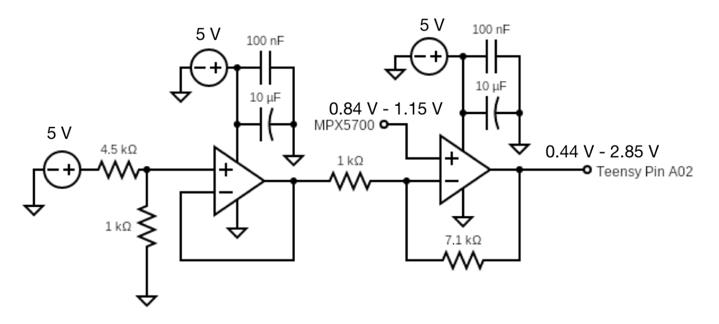
Pressure (depth)
Non-inverting amplifier with an offset from a buffered voltage divider. Covers 101–147 kPa, from the surface to the 4.5 m maximum depth.
- Sensor out
- 0.84 – 1.15 V
- To Teensy
- 0.44 – 2.85 V
- Gain
- 8.1×

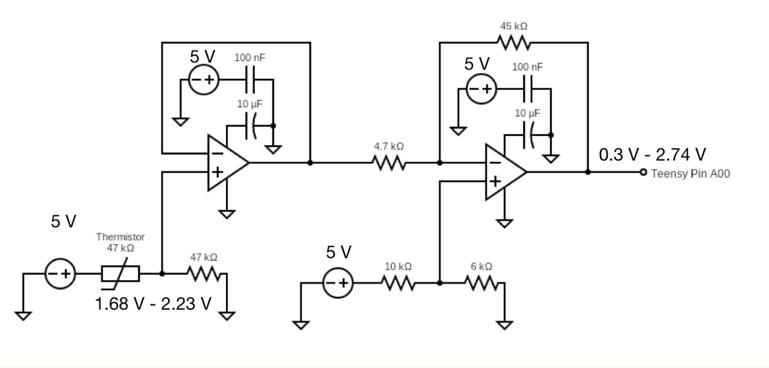
Temperature
A thermistor voltage divider designed for 10–20 °C (59–97 kΩ), buffered, then sent through an inverting amplifier with a 1.875 V reference.
- Divider out
- 1.68 – 2.23 V
- To Teensy
- 0.30 – 2.74 V
- Gain
- −9.6×

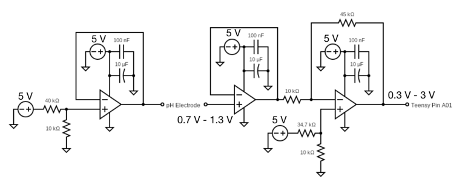
pH
The electrode sits between two buffers with a 1 V offset, then goes through an inverting amplifier. Designed for seawater pH 7.8–8.4.
- Probe out
- 0.7 – 1.3 V
- Gain
- −4.5×
Calibration and verification
We built a calibration curve for each sensor to convert logged voltages to physical units, then checked each one live on the serial monitor. Depth readings matched known depths in a graduated cylinder to within 2 cm, and temperature readings matched three prepared water baths to within 1 °C.

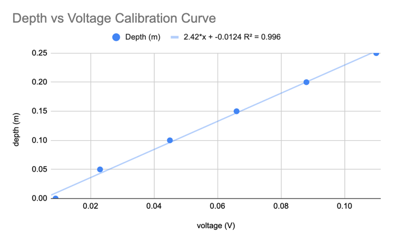

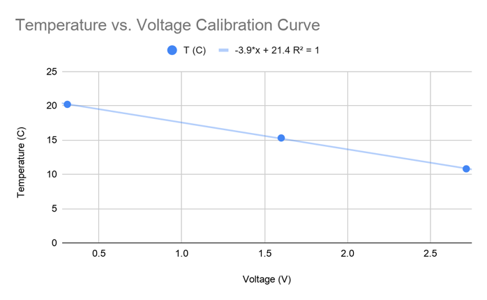

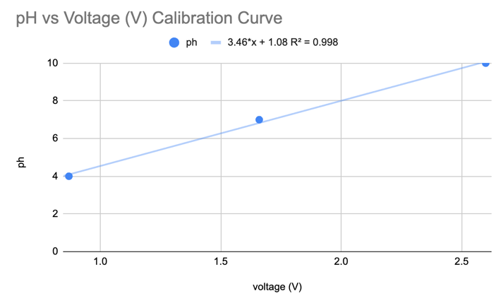
Deployment at Dana Point
The dive code sent the AUV to waypoints at 0.5, 1.5, 2.5, 3.5 and 4.5 m, holding for 15 seconds at each under proportional depth control. We first verified it with two-waypoint tank tests at Harvey Mudd. On deployment day the thermistor began railing. Debugging on the dock showed its resistance had climbed to the megaohm range, so we replaced it, which left time for one full dive from the Ocean Institute dock. The water was shallow there, so the AUV reached three waypoints before touching the sea floor, and we pulled it up by its tether.

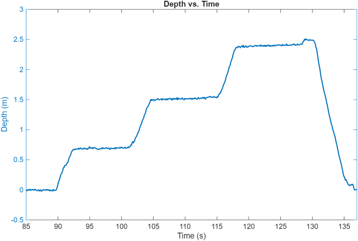

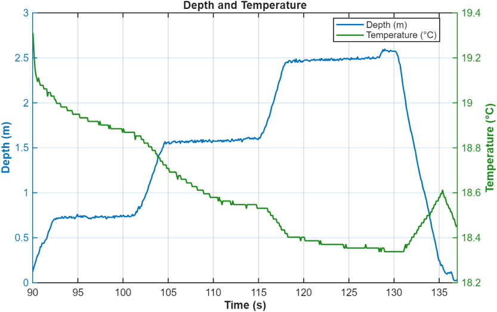
Results
Temperature worked. Averaging the data in 0.1 m depth bins gives a clean profile of temperature falling with depth. The large error bars near the surface come from air and water mixing as the AUV entered the water.
pH did not. Readings rose from 9.7 to 12.5 with depth, while ground-truth samples were around 6–7. The sensor clearly responded to depth changes, so the circuit was working, but the electrode had likely dried out between calibration and deployment. Our pH 4/7/10 calibration buffers also spanned far more than the range we expected to measure, which likely added interpolation error.

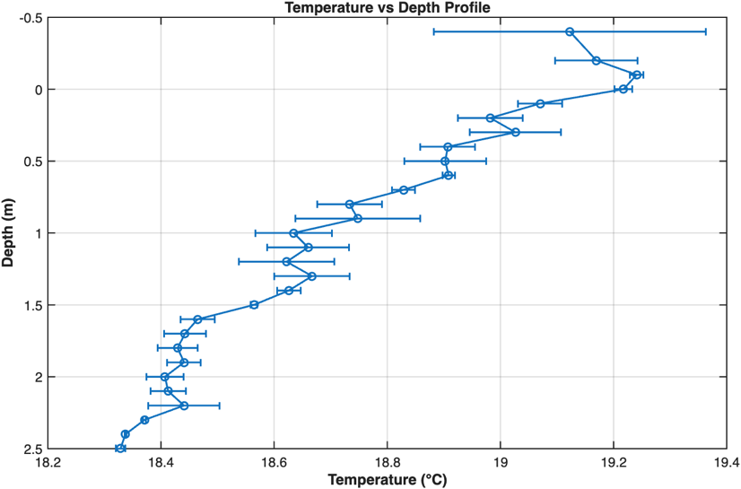

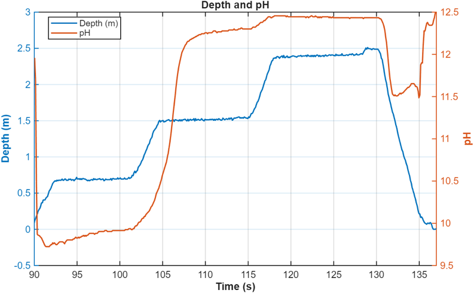
Conclusion
This project shows a working pipeline for collecting ocean data autonomously, from sensing to analysis. Custom circuits condition each sensor's signal, the Teensy logs it during a closed-loop dive, and MATLAB turns the logs into depth profiles. The temperature results show the whole chain working in the ocean. The pH results show where the pipeline still needs work before it can support conclusions about ocean acidification.
Future steps
- Calibrate in realistic conditions. Use more points and more trials, in seawater, over the range we actually expect to measure. For pH, that means buffers near 7.8–8.4 instead of 4, 7 and 10.
- Recalibrate on site. Take several depth readings at the deployment location instead of applying a single offset.
- Filter the signals. Add an RC low-pass filter on each sensor output, with a cutoff of a few hertz, to cut noise and prevent aliasing at the 10 Hz sample rate.
- Protect the sensors. Store the pH electrode properly so it doesn't dry out, and bring a spare thermistor.
- Collect more data. Run multiple dives at different locations and times of day to build a full Dana Point water profile that can support conclusions about ocean acidification.